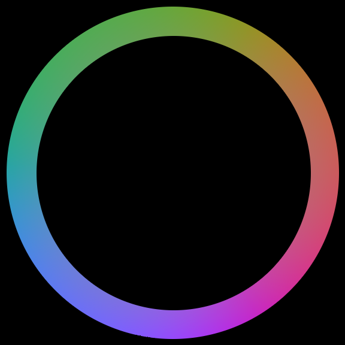

文字顏色漸變效果
〈用CSS排出好看的網頁〉第三回
這次的CSS排版想要實現的是文字顏色漸變的動畫，先來直接看看效果：
看起來非常的有氣氛對吧？接著就來看看是怎麼做到的吧！
設計概念
實現這個效果的核心是使用CSS的filter(濾鏡)這個屬性。使用的方式為在需要加濾鏡的元素CSS中加入
filter : 關鍵字(參數)
好比說寫filter : blur(3px)，表示說濾鏡的效果是將元素變模糊，模糊的程度透過參數來設定。數值越大越模糊；這裡我們要使用filter : hue-rotate(數值deg)這個敘述。它可以調整顏色的hue值。把hue值想像成一個環，不同的角度對應不同的顏色。0deg(0度)對應的是紅色，240deg(240度)對應的是藍色，依此類推。而hue-rotate中的參數就表示把hue值加(或減)多少度。

了解filter : hue-rotate(?deg)之後，再來就是用動畫(animation)的方式去動態的改變參數(?deg)，並且讓動畫無限次循環播放，就能夠達到上面的效果了。接著就是程式碼的部分囉！
HTML
<!doctype html>
<html lang="zh-tw">
<head>
<title>Text Color Animation</title>
<meta charset="utf-8">
</head>
<body>
<ul>
<li>
<div>M</div>
</li>
<li>
<div>i</div>
</li>
<li>
<div>c</div>
</li>
<li>
<div>h</div>
</li>
<li>
<div>a</div>
</li>
<li>
<div>e</div>
</li>
<li>
<div>l</div>
</li>
</ul>
</body>
</html>
利用<ul></ul>與<li></li>分別將要實現文字顏色漸變的字母給建立起來。再來是CSS的部分。
CSS
body {
padding : 0;
margin : 0;
height : 100 vh;
background : #2a2734;
font-family : sans-serif;
display : flex;
justify-content : center;
align-items : center;
}
ul {
display : flex;
width : 100vw;
}
li {
list-style : none;
}
div {
height : 60px;
width : 60px;
display : flex;
justify-content : center;
align-items : center;
font-size : 50px;
cursor : pointer;
/*2的適當的陰影搭配，效果很酷炫*/
text-shadow : 0 0 15px yellow, 0 0 25px yellow;
color : yellow;
animation : text-change 2s linear infinite;
}
@keyframes text-change {
0% {
/*filter的使用，當作在使用濾鏡即可*/
filter : hue-rotate(0deg);
}
100% {
filter : hue-rotate(360deg);
}
}
比較特別的部分是，在div的樣式設定中，使用了text-shadow設定文字的陰影，分別用了0 0 15px yellow與0 0 25px yellow兩個設定，這樣就會讓文字有自己發光的效果。
另外就是動畫的設定。利用@keyframes [動畫名]做自訂動畫，並且將文字用
animation : [動畫名] 秒數 播放時間分配 重複次數
來套用自訂的動畫。當中的0%與100%表示的是時間點，0%是一開始，而100%是動畫結束時。在0%時hue-rotate的參數是0deg，也就是正常顯示顏色；在100%時hue-rotate(360deg)，在動畫播放完時，hue值剛好轉了一圈(加了360度)回到原點。所以整個動畫所呈現的，就是在動畫播放時間內，原本的hue值按照色環的顏色順序逆時鐘轉了一圈回到原本的顏色，也就完成了酷炫的文字顏色漸變的效果囉( •̀ ω •́ )✧

國立交通大學材料系奈米科技碩士班畢業(現在應該稱國立陽明交通大學ʕ •ᴥ•ʔ)。雖然非資工相關科系畢業，但本著對資工領域的興趣而開始自學相關知識，目前則專攻網頁相關知識，如HTML5、CSS3、JavaScript、Node.js。以跨領域學習者的角度來介紹資工領域相關的知識，除了加深自己對相關知識的理解，也期望同是跨領域學習的朋友們因為瀏覽我的文章而有更多不一樣的觀點可以參考。